没有公网IP，也能远程看家里的IPTV：Cloudflare Tunnel实现组播转单播内网穿透

之前我们专门介绍过如何利用 rtp2httpd 将家庭 IPTV 的 RTP/UDP 组播转换成 HTTP 单播，让原本只能在家庭局域网中观看的 IPTV，可以被普通播放器访问。
👉 参考前文：
一款比 udpxy、msd_lite 更强大的 IPTV 组播转单播神器 —— rtp2httpd
湖南电信OpenWrt 拨号 IPTV 全流程教程 | 内网融合组播转单播 + 单播回看全搞定
这次继续往后折腾。
如果家里的 IPTV 已经可以通过 rtp2httpd 正常播放，那么有没有办法在没有公网 IPv4、无法做端口映射的情况下，通过一个公网域名，从外面访问家里的 IPTV？
答案就是：
☁️ Cloudflare Tunnel + rtp2httpd
而且这个玩法并不局限于 IPTV。
只要是家庭局域网里可以通过 HTTP/HTTPS 访问的服务，例如：
📺 rtp2httpd 📡 TVGate 🛠️ 1Panel 🖥️ NAS Web 管理页面 🏠 php环境 Web 服务 📊 各种自建 Web 服务
理论上都可以通过 Cloudflare Tunnel 建立公网访问入口。
所以本文真正想介绍的，其实是：
利用一台内网设备运行 Cloudflare Tunnel，把整个家庭局域网中的 Web 服务“接入”公网。
而 IPTV，只是其中一个非常有意思的应用场景。


为了避免后面的 IP 地址看起来比较抽象，先把本文实际使用的家庭网络环境交代清楚。
本次测试环境如下：
家庭局域网 │ ┌──────────┴──────────┐ │ │ 路由器 N1 盒子 192.168.0.1 192.168.0.203 │ │ │ Docker │ │ │ cloudflared rtp2httpd │ IPTV 组播 → HTTP这里有两个非常关键的设备：
📺 路由器：192.168.0.1
路由器本身已经完成 IPTV 相关配置，并在上面运行：
rtp2httpd也就是说：
IPTV 组播 ↓路由器192.168.0.1 ↓rtp2httpd ↓HTTP具体 rtp2httpd 如何安装和配置，可以直接参考之前的文章，这里不再重复。
🐳 N1：192.168.0.203
另外有一台 N1 盒子，IP 地址：
192.168.0.203N1 上运行 Docker，并部署：
cloudflared也就是说，本文的 Cloudflare Tunnel 并不是运行在路由器上，而是运行在 N1 上。
因为两台设备都在同一个家庭局域网中，所以 N1 上的 cloudflared 可以直接访问：
http://192.168.0.1:xxxx这样的内网服务。


这也是这个方案比较有意思的地方。
很多人可能会想：
rtp2httpd 都运行在 192.168.0.1 上了，是不是 cloudflared 也必须安装在路由器上？
其实完全不需要。
Cloudflare Tunnel 的本质是：
cloudflared
↓
访问某个内网服务只要运行 cloudflared 的设备能够访问目标服务即可。
从某种角度来说，把 cloudflared 单独放在 N1 上反而更加方便。
因为路由器负责：
🌐 路由
📺 IPTV
📡 IGMPN1 负责：
🐳 Docker
☁️ Cloudflare Tunnel
🛠️ 其他服务各司其职。


传统的内网穿透思路通常是：
公网 ↓公网IP ↓路由器端口映射 ↓192.168.0.x ↓内网服务但很多家庭宽带没有公网 IPv4，或者处于 CGNAT 后面。
这时候端口映射就比较尴尬。
Cloudflare Tunnel 则反过来：
家庭网络 │ │ 主动连接 ▼cloudflared │ ▼Cloudflare ☁️然后外部用户访问：
https://tv.example.comCloudflare 再通过已经建立的 Tunnel，把请求转回：
192.168.0.1上的服务。
所以：
家庭路由器不需要专门开放一个公网入站端口。


在 N1 上部署 cloudflared 之前，需要先在 Cloudflare 后台创建一个 Tunnel。
整个过程可以简单理解为：
Cloudflare 后台 ↓创建 Tunnel ↓获得 Tunnel Token ↓N1 Docker 部署 cloudflared ↓连接到刚刚创建的 Tunnel1️⃣ 登录 Cloudflare
首先登录自己的 Cloudflare 账户，进入对应域名所在的 Cloudflare 控制台。
进入 Zero Trust 管理界面（首次进入可能需要绑定支付方式验证身份，但创建隧道本身是免费的）。
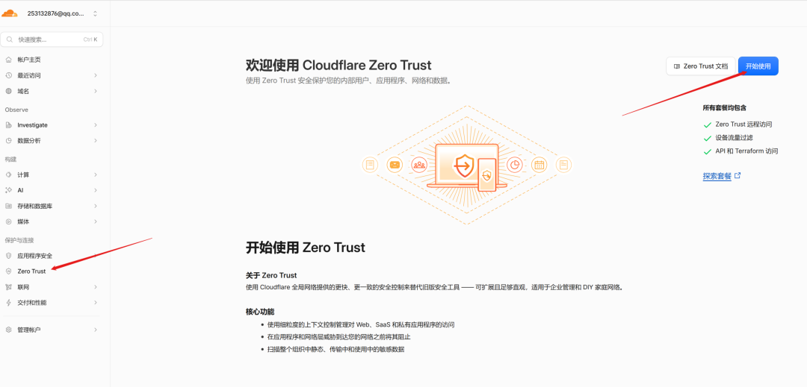
然后找到：
Networks（网络）
↓
Tunnels（连接器）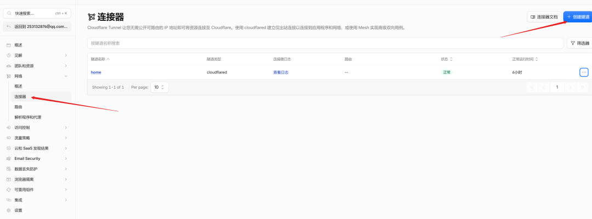
2️⃣ 创建一个新的 Tunnel 🚇
点击：
创建隧道然后选择使用：
Cloudflared作为 Tunnel 类型。
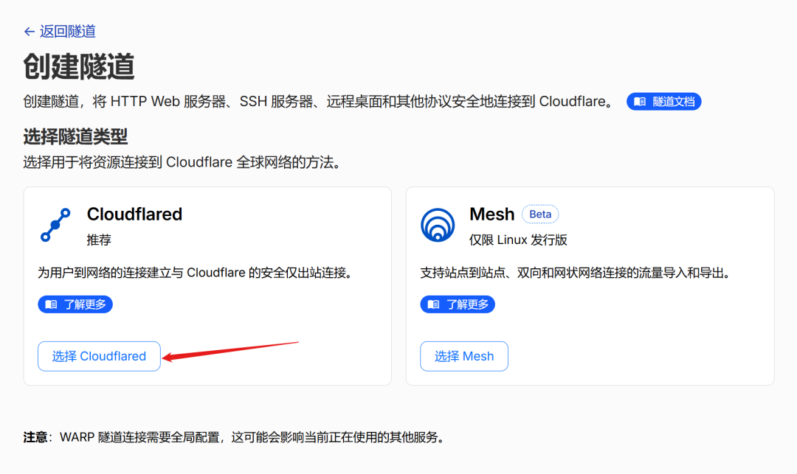
接下来给 Tunnel 起一个名字。
例如：
home或者：
home-server名字主要用于自己管理和区分不同 Tunnel，并不会直接影响后面的公网域名。
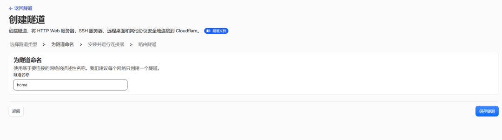
如果这个 Tunnel 不只是用于 IPTV，而是准备同时连接：
📺 rtp2httpd 📡 TVGate 🛠️ 1Panel 🖥️ NAS 🏠 其他 HomeLab 服务
那么更推荐使用：
home-server这样的名称，而不是：
iptv因为以后可以继续往里面添加其他内网服务。
3️⃣ 获取 Tunnel Token 🔑
Tunnel 创建完成后，Cloudflare 会让你选择安装并运行连接器。
Cloudflare 会根据你的系统提供对应的安装命令。
本文使用的是：
🐳 Docker
所以后面直接在 N1 上使用 Docker 运行 cloudflared 即可。
Cloudflare 随后会提供类似这样的运行命令：
cloudflared tunnel --no-autoupdate run --token eyJhIjoi...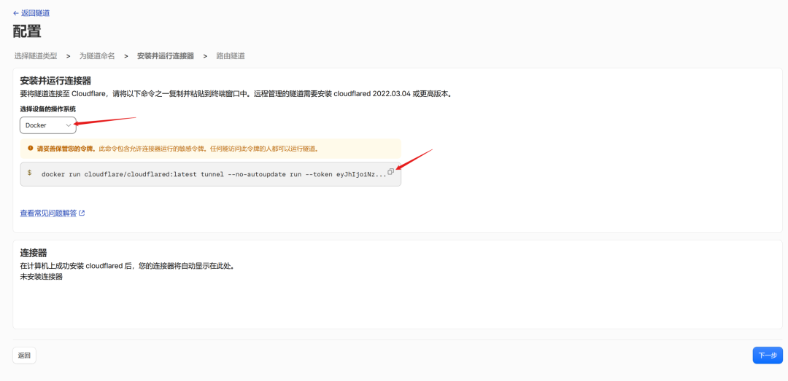
这里最重要的就是：
--token后面的这一长串字符串就是这个 Tunnel 的认证 Token。
不要把自己的真实 Token 泄露出去。
因为这个 Token 相当于：
🗝️ 让
cloudflared加入这个 Tunnel 的凭据。
后面我们在 N1 上运行 Docker 时，就会用到它：
docker run -d \
--name cloudflare-tunnel \
--restart unless-stopped \
cloudflare/cloudflared:latest \
tunnel --no-autoupdate run --token YOUR_TUNNEL_TOKEN

本文的 cloudflared 部署在：
192.168.0.203这台 N1 上。
如果 N1 已经安装 Docker，直接运行：
docker run -d \
--name cloudflare-tunnel \
--restart unless-stopped \
cloudflare/cloudflared:latest \
tunnel --no-autoupdate run --token YOUR_TUNNEL_TOKEN这个命令比cloudflare提供的多了几个参数，说明一下：| 参数 | 作用 |
|---|---|
-d | 后台运行（Detach mode），不会占用你的终端窗口 |
--name cloudflare-tunnel | 给容器起个名字，方便后续管理（查看日志、停止、重启） |
--restart unless-stopped | 关键参数：Docker 意外退出时自动重启，系统重启后也会自动启动（除非你手动 stop 过） |
--no-autoupdate | 禁止 cloudflared 自动更新，避免更新导致隧道中断（由 Docker 镜像更新更可控） |
其中：
YOUR_TUNNEL_TOKEN替换成 Cloudflare 后台创建 Tunnel 后获得的 Token。
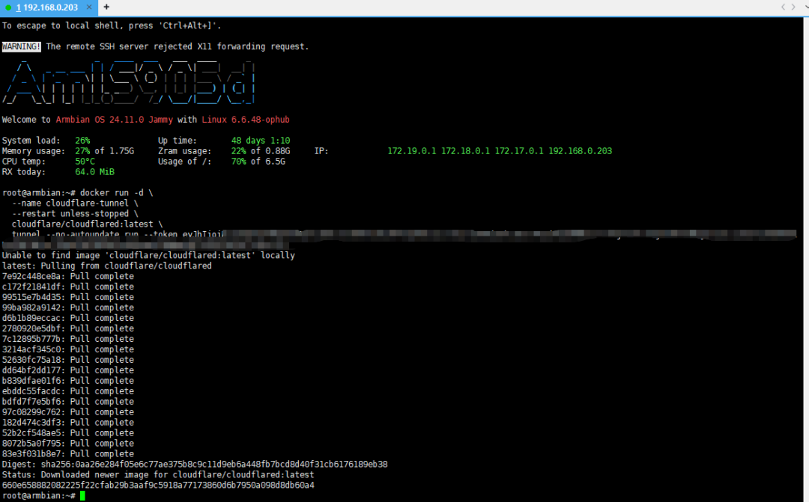
⚠️ 注意：
真实 Token 不要泄露。
文章示例中建议统一使用：
YOUR_TUNNEL_TOKEN代替，实际部署时，请自行替换成你的token。
如果真实 Token 已经泄露，则应该及时处理对应 Tunnel 凭据。


运行上面的 Docker 命令后，你可能会发现：
docker ps并没有看到类似：
-p 80:80
-p 443:443
-p 5140:5140这是正常的。
因为 cloudflared 并不是等待公网连接进来。
而是：
N1
192.168.0.203
│
│ 主动连接
▼
Cloudflare所以家庭网络侧不需要为了 Cloudflare Tunnel 再开一个公网端口。
这也是：
Cloudflare Tunnel ≠ 传统端口映射
最核心的区别。


docker部署完成之后，回到 Cloudflare 后台继续配置 Tunnel。
假设我们准备使用：
tv.example.com作为 IPTV 的公网域名。
在 Tunnel 中添加一个“已发布应用程序”。
主机名：
tv.example.com服务：
http://192.168.0.1:4022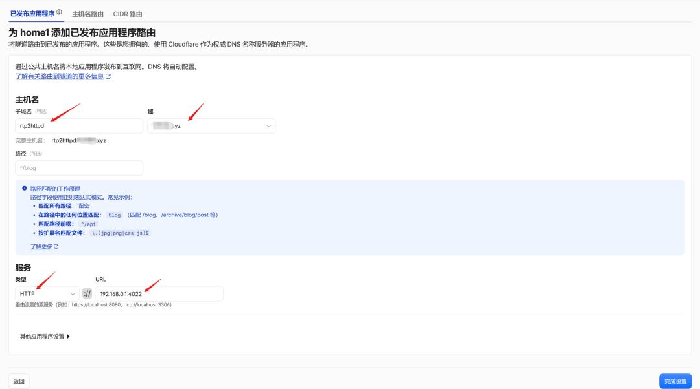
那么整个关系就是：
公网https://tv.example.com │ ▼☁️ Cloudflare │ ▼🐳 N1192.168.0.203cloudflared │ ▼🏠 192.168.0.1 │ ▼📺 rtp2httpd注意这里有一个容易理解错的地方：
Tunnel 跑在 N1 上，但 Tunnel 的目标服务可以是同一局域网中的另一台设备。
这正是我们这个实际网络环境的特点。
配置完成后，先不要急着打开 IPTV 播放器。
直接访问：
https://tv.example.com/status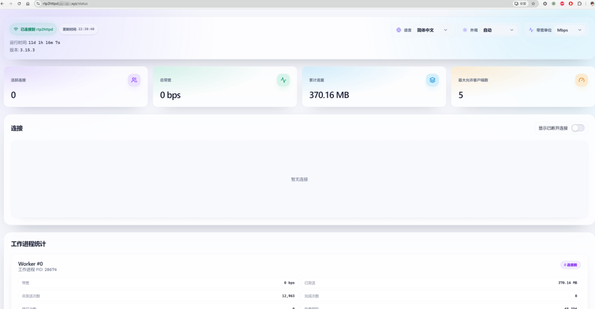
如果能够正常访问路由器上的 rtp2httpd 服务：
🎉 说明：
公网 ↓Cloudflare ↓N1 cloudflared ↓192.168.0.1 ↓rtp2httpd整个链路已经打通。
接下来再测试具体 IPTV 频道。
至于 rtp2httpd 的频道地址、M3U 等具体配置，就不在这里重复介绍了。
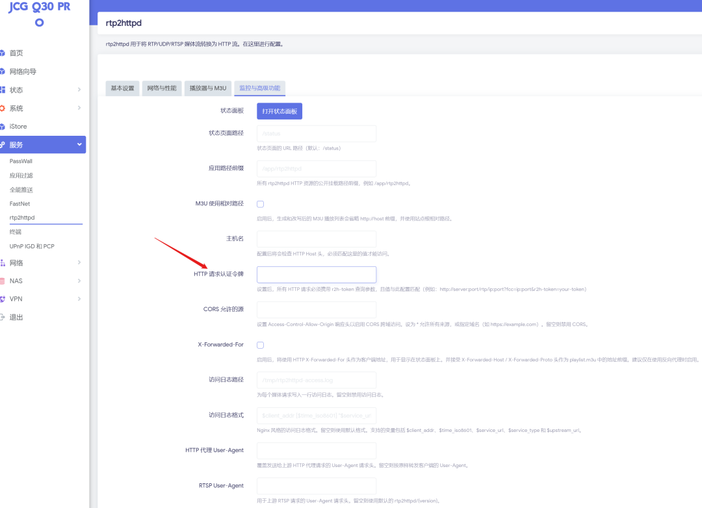


如果做到这里，你可能会发现：
Cloudflare Tunnel 其实根本不关心你后面是什么服务。
它只需要知道：
公网域名 ↓内网 Service所以除了：
tv.example.com ↓192.168.0.1:4022还可以继续添加其他服务。
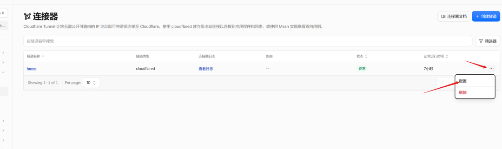
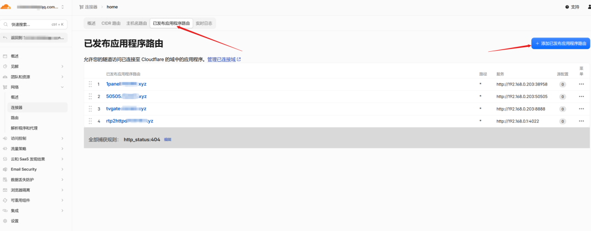
例如家里有：
TVGate
192.168.0.203:8888那么可以配置：
gate.example.com ↓192.168.0.203:8888再比如：
1Panel
192.168.0.203:38598可以配置：
panel.example.com ↓192.168.0.203:38598甚至还可以继续添加：
nas.example.com ↓192.168.0.xxx:xxxxhome.example.com ↓192.168.0.xxx:xxxxiptv.example.com ↓192.168.0.xxx:xxxx于是，一个 Tunnel 就可以成为家庭内网服务的统一公网入口。🚀
最终可能形成这样的结构：
☁️ Cloudflare │ Cloudflare Tunnel │ 🐳 N1 192.168.0.203 │ ┌───────────────────┼───────────────────┐ │ │ │ ▼ ▼ ▼ tv.example.com gate.example.com panel.example.com │ │ │ ▼ ▼ ▼ 192.168.0.1 TVGate服务 1Panel rtp2httpd这时候 Cloudflare Tunnel 就不再只是：
“远程看 IPTV 的工具”
而变成了：
家庭内网 Web 服务的统一入口。
这也是我觉得这个方案最值得分享的地方。


① Tunnel部署在哪个设备不重要，关键是能访问目标服务
本文：
cloudflared
192.168.0.203但目标：
rtp2httpd
192.168.0.1完全没有问题。
只要：
192.168.0.203 ↓192.168.0.1:端口网络是通的即可。
② 先测试内网，再测试公网
建议按照：
① IPTV组播正常 ↓② rtp2httpd局域网正常 ↓③ N1能访问rtp2httpd ↓④ Tunnel连接正常 ↓⑤ 公网域名能打开 ↓⑥ 公网播放器测试一步一步来。
③ Docker网络也要注意
如果 cloudflared 使用默认 Docker 网络，一般访问家庭局域网 IP 没问题。
但如果你对 Docker 网络做过特殊隔离、防火墙限制等，就需要确认：
cloudflared容器 ↓192.168.0.1确实可以访问。

如果之前已经看过我们介绍 rtp2httpd 的文章，那么这次其实不用重新学习一套 IPTV 系统。
你只需要在原来的基础上，再增加一个：
🐳 cloudflared即可。
最终：
家庭局域网 🏠 │ ┌────────────┴────────────┐ │ │192.168.0.1 192.168.0.203 路由器 N1盒子 │ │ rtp2httpd Docker │ │ │ cloudflared │ │ └───────────┬─────────────┘ │ ▼ ☁️ Cloudflare │ ┌────────┼─────────┐ │ │ │ ▼ ▼ ▼ IPTV域名 TVGate 1Panel │ ▼ 📺 远程播放所以，这个玩法真正有意思的地方并不是：
“Cloudflare 可以远程看 IPTV。”
而是：
“只要家庭内网服务能够通过 HTTP/HTTPS 访问，就可以考虑利用 Cloudflare Tunnel 给它配置一个公网域名。”
今天是：
📺 rtp2httpd
明天可能就是：
📡 TVGate
甚至：
🛠️ 1Panel
🏠 NAS
🖥️PHP Web
……
一个 N1，一个 Tunnel，就可以把家里的各种 Web 服务串起来。🌐✨
当然，管理后台类服务一定要做好身份认证和访问控制；同时，IPTV 相关内容也应确保属于自己有权访问和使用的范围，并遵守运营商服务协议、Cloudflare 服务条款以及当地法律法规。